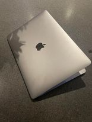

Computere
Et site om computeren med alt fra dens historie til dens specifikationer og mine personlige præferencer, når det gælder computere og computerudstyr


Computere i hjemmet
Ni ud af ti familier ejer i 2022 en eller flere smartphones, mens knap seks ud af ti familier har en tablet-pc liggende. Helle 94 procent ejer er en personlig computer, hvoraf fire ud af ti anvender Windows som deres primære operativsystem,
- Personlig computer
- 94%
- Windows
- 40%
- Tablet
- 56%
- Smartphone
- 93%